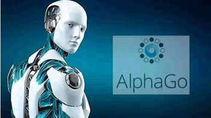
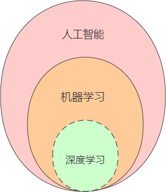

什么是人工智能
很早就想写一门关于 Python“机器学习”的教程，不过碍于自身知识的局限性，不知如何下手。如果写的教程通篇只是探讨代码、数学知识、算法原理，这样的教程读起来必然索然无味。经过冥思苦想，终于突发灵感，可不可以写一部关于“机器学习算法”的入门教程呢？让初学者更容易理解常用的机器学习算法，从而帮助那些想要了解机器学习的人，打开通往人工智能世界的大门。
本教程本着“讲一点，透一点”尽量绕开繁琐的数学公式，以简单、通俗易懂的形式讲解“机器学习算法”。对于必须讲解的数学公式，也会竭尽所能“讲透彻，讲细致”，其次也会结合算法的原理与应用场景讲解具体实例，最终打通你的“任督二脉”，助你走进人工智能的世界。
在正式讲解机器学习算法之前，我们需要对人工智能做简单的认了解与认识。
近些年“人工智能”热潮的兴起，这给我们的生活带来了巨大的改变。无人驾驶、机器翻译、语音识别、图像识别，这些都是“人工智能”的产物。比如 AlphaGo Zero 一台没有任何围棋知识的智能机器，经过几天的自我博弈成为了世界第一的围棋大师；“风格多变 app”能自动将用户的上传的照片转变为具有艺术风格的照片；“机器翻译”可以在很短的时间内将一种语言翻译成另外一种语言，以及 AI 智能医生能够将病情诊断变得更加精准。
从 20 世纪 50 年代中期至 70 年代中期，众多学者、科学家投身于人工智能领域的研究。但是由于硬件设施、计算机技术发展还不成熟，远不能满足人工智能对计算机算力、数据获取与存储的要求，从而导致人工智能迎来了第一个低谷期。在这一时期许多具有指导意义的著作相继发表，这为后续的再度发展打下了理论基础。
寒冬虽然来临，不过有着坚韧不拔精神的学者们仍未放弃，直至于 20 世纪 80 年代，卡内基梅隆大学终于设计出了第一套专家系统——XCON，该专家系统具有一套强大的知识库和推算能力，可以模拟人类专家来解决特定领域问题。随后日本、美国相继成立专家团队希望用 10 年的时间研究出智能计算机，由此带来了“人工智能”的第二次发展热潮。
2005 年美国国防部高级研究计划局（简称 DARPA）举办的自动驾驶挑战赛中，一辆由斯坦福大学研发的无人驾驶汽车 “Stanley” 赢得胜利，这是“无人驾驶技术”第一次出现在世人面前。截止目前为止，许多高端科技已经相继问世，比如谷歌机器翻译、AI 诊断医生、语音识别、图像识别、以及人工智能协同“AlphaGO”等等。
互联网和云计算之所以让“人工智能”再次复兴，其原因主要有两点：一是互联网能够提供海量的数据；二是云计算提供了超强的计算能力。科研工作者们坚信，在经历这些坎坷后人工智能定会在当下以及未来迎来更加蓬勃的发展。
如今人工智能已经走进了千家万户，对于普通大众来说，它已经是一个耳熟能详的名字。但还有两个词语您可能没有听说过，它就是机器学习和深度学习。
对于从事计算机领域的工作者或者技术爱好者来说，机器学习与深度学习并不陌生，然而对于初学者而言就可能傻傻分不清楚，那么它们之前到底存在什么关系呢？其实它们之间是包含与被包含关系，下面展示了它们之间的关系图，如下所示：
单从定义上来说，机器学习是一种功能、方法，或者更具体的说是一种算法，它能够赋予机器进行学习的能力，从而使机器完成一些通过编程无法直接实现的功能。但从具体的实践意义来说，其实机器学习是利用大量数据训练出一个最优模型，然后再利用此模型预测出其他数据的一种方法。比如要识别猫、狗照片就要拿它们各自的照片提炼出相应的特征（比如耳朵、脸型、鼻子等），从而训练出一个具有预测能力的模型。
在学习机器学习技术的过程中，我们会遇到很多专业术语或者生僻词汇，这些名词大多数来自于数学或者统计学领域，比如模型、数据集、样本、熵，以及假设函数、损失函数等，这些属词汇于基本的常识，但是如果你第一次接触的话，也会感觉到些许惊慌。在下一节我们将介绍机器学习的常用术语。
写在前面的话
机器学习是一门涉及了大量逻辑与算法的技术，令很多人望而却步，既想掌握，又害怕自己数学知识“拖后腿”，最终导致前功尽弃。本教程本着“讲一点，透一点”尽量绕开繁琐的数学公式，以简单、通俗易懂的形式讲解“机器学习算法”。对于必须讲解的数学公式，也会竭尽所能“讲透彻，讲细致”，其次也会结合算法的原理与应用场景讲解具体实例，最终打通你的“任督二脉”，助你走进人工智能的世界。
在正式讲解机器学习算法之前，我们需要对人工智能做简单的认了解与认识。
人工智能应用
我们正处在一个日新月异、飞速变革的时代，层出不穷的新技术，无时无刻不刷新着我们的世界观，这其中信息技术发挥了巨大的作用，比如计算机、互联网、智能家居等技术的普及极大地方便了人们的生活，这在几十年前根本是无法想象的。近些年“人工智能”热潮的兴起，这给我们的生活带来了巨大的改变。无人驾驶、机器翻译、语音识别、图像识别，这些都是“人工智能”的产物。比如 AlphaGo Zero 一台没有任何围棋知识的智能机器，经过几天的自我博弈成为了世界第一的围棋大师；“风格多变 app”能自动将用户的上传的照片转变为具有艺术风格的照片；“机器翻译”可以在很短的时间内将一种语言翻译成另外一种语言，以及 AI 智能医生能够将病情诊断变得更加精准。

图1：世界第一围棋大师
在过去的几年内，“人工智能”技术不仅在学术上取得了巨大的突破，也开始走向寻常百姓家，比如小度、天猫精灵等语音控制机器。
图1：世界第一围棋大师
人工智能发展简史
“人工智能”（Artificial Intelligence），英文缩写为 AI 从字面意思来看，它指的是让机器获得像人一样的智慧。电影《黑客帝国》中的大 BOSS 就是一个名叫“矩阵”的智能机器。但“人工智能”真的会像科幻电影一样，在不久的将来控制世界与人类吗？其实这种担心就目前而言大可不必，这种可能只能存在于影片艺术表现形式中。不过你要问“人工智能”会取代人类吗？这一点倒值的你我深思。1) 第一次兴起
“人工智能”并非一个新兴概念，早在 1950 年 艾伦·图灵 就提出了图灵测试机的构想。随后，在 Dartmouth (达特茅斯)学会上，“人工智能”的概念被首次提出。在这之后人工智能经历了一段崎岖的发展历程。从 20 世纪 50 年代中期至 70 年代中期，众多学者、科学家投身于人工智能领域的研究。但是由于硬件设施、计算机技术发展还不成熟，远不能满足人工智能对计算机算力、数据获取与存储的要求，从而导致人工智能迎来了第一个低谷期。在这一时期许多具有指导意义的著作相继发表，这为后续的再度发展打下了理论基础。
寒冬虽然来临，不过有着坚韧不拔精神的学者们仍未放弃，直至于 20 世纪 80 年代，卡内基梅隆大学终于设计出了第一套专家系统——XCON，该专家系统具有一套强大的知识库和推算能力，可以模拟人类专家来解决特定领域问题。随后日本、美国相继成立专家团队希望用 10 年的时间研究出智能计算机，由此带来了“人工智能”的第二次发展热潮。
2) 第二次发展
在第二个发展热潮中，有一个最引人注目的成果，那就是“反向传播算法”得到了成功应用，它为神经网络的发展奠定了基础。1986 年第一届深度学习神经信息处理系统研讨会（简称 NIPS）在美国举办，该会议吸引了很多不同领域的研究人员。但是由于技术应用实现困难，加之计算机算力、数据等不足，从而导致了“人工智能”的第二个低谷期。3) 第三次崛起
时间终于来到了 21 世纪，由于互联网和云计算的兴起，计算机硬件、性能也得到了大幅度提升，因此“人工智能”在经历了数十年的低谷期后终于迎来了第三次发展热潮。2005 年美国国防部高级研究计划局（简称 DARPA）举办的自动驾驶挑战赛中，一辆由斯坦福大学研发的无人驾驶汽车 “Stanley” 赢得胜利，这是“无人驾驶技术”第一次出现在世人面前。截止目前为止，许多高端科技已经相继问世，比如谷歌机器翻译、AI 诊断医生、语音识别、图像识别、以及人工智能协同“AlphaGO”等等。
互联网和云计算之所以让“人工智能”再次复兴，其原因主要有两点：一是互联网能够提供海量的数据；二是云计算提供了超强的计算能力。科研工作者们坚信，在经历这些坎坷后人工智能定会在当下以及未来迎来更加蓬勃的发展。
机器学习&深度学习
人工智能（Artificial Intelligence）是计算机科学技术的一个分支，指的是通过机器和计算机来模拟人类智力活动的过程。人工智能自 1950 年诞生以来，理论和技术日益成熟，应用领域也不断扩大，涉足了领域包括机器人、语言识别、图像识别、自然语言处理等。人工智能并不是人的智能，而是让机器像人一样思考，甚至于超过人类。如今人工智能已经走进了千家万户，对于普通大众来说，它已经是一个耳熟能详的名字。但还有两个词语您可能没有听说过，它就是机器学习和深度学习。
对于从事计算机领域的工作者或者技术爱好者来说，机器学习与深度学习并不陌生，然而对于初学者而言就可能傻傻分不清楚，那么它们之前到底存在什么关系呢？其实它们之间是包含与被包含关系，下面展示了它们之间的关系图，如下所示：

图2：三者关系图
从图中可以看出，机器学习是人工智能的一部分，而深度学习又是机器学习的一部分。人工智能的范围最为广泛，机器学习是人工智能的核心分支，也是当前发展最迅猛的一部分，而关于深度学习，它之前也属于“机器学习”的一个分支，其主要研究对象是神经网络算法，因想要区别于“机器学习”，它重新起了一个高大上的名字。下面以最具有代表性的机器学习来做进一步介绍。图2：三者关系图
单从定义上来说，机器学习是一种功能、方法，或者更具体的说是一种算法，它能够赋予机器进行学习的能力，从而使机器完成一些通过编程无法直接实现的功能。但从具体的实践意义来说，其实机器学习是利用大量数据训练出一个最优模型，然后再利用此模型预测出其他数据的一种方法。比如要识别猫、狗照片就要拿它们各自的照片提炼出相应的特征（比如耳朵、脸型、鼻子等），从而训练出一个具有预测能力的模型。
学习形式分类
机器学习是人工智能的主要表现形式，其学习形式主要分为：有监督学习、无监督学习、半监督学习等，如果你之前没有接触过机器学习，那么对于“监督”一词会不明就里，其实你可以把这个词理解为习题的“参考答案”，专业术语叫做“标记”。比如有监督学习就是有参考答案的学习，而无监就是无参考答案。1) 有监督学习
有监督学习（supervised learning），需要你事先需要准备好要输入数据（训练样本）与真实的输出结果（参考答案)，然后通过计算机的学习得到一个预测模型，再用已知的模型去预测未知的样本，这种方法被称为有监督学习。这也是是最常见的机器学习方法。简单来说，就像你已经知道了试卷的标准答案，然后再去考试，相比没有答案再去考试准确率会更高，也更容易。2) 无监督学习
理解了有监督学习，那么无监督学习理解起来也变的容易。所谓无监督学习（unsupervised learning）就是在没有“参考答案”的前提下，计算机仅根据样本的特征或相关性，就能实现从样本数据中训练出相应的预测模型。除了上述两种学习形式外，还有半监督学习和强化学习，它不在本教程的讨论范畴之内，有兴趣的可以自己研究一下。
预测结果分类
根据预测结果的类型，我们可以对上述学习形式做具体的问题划分，这样就可以具体到实际的应用场景中，比如有监督学习可以划分为：回归问题和分类问题。如果预测结果是离散的，通常为分类问题，而为连续的，则是回归问题。1) 回归&分类
连续和离散是统计学中的一种概念，全称为“连续变量”和“离散变量”。比如身高，从 1.2m 到 1.78m 这个长高的过程就是连续的，身高只随着年龄的变化一点点的长高。那么什么是“离散变量”呢？比如超市每天的销售额，这类数据就是离散的，因为数据不是固定，可能多也可能少。关于什么是“回归”和“分类”在后续内容中会逐步讲解。2) 聚类
无监督学习是一种没有“参考答案”的学习形式，它通过在样本之间的比较、计算来实现最终预测输出，比如聚类问题，那什么是“聚类”？其实可以用一个成语表述“物以类聚，人以群分”，将相似的样本聚合在一起后，然后进行分析。关于聚类也会在后续内容中逐步讲解。在学习机器学习技术的过程中，我们会遇到很多专业术语或者生僻词汇，这些名词大多数来自于数学或者统计学领域，比如模型、数据集、样本、熵，以及假设函数、损失函数等，这些属词汇于基本的常识，但是如果你第一次接触的话，也会感觉到些许惊慌。在下一节我们将介绍机器学习的常用术语。
关注公众号「站长严长生」，在手机上阅读所有教程，随时随地都能学习。内含一款搜索神器，免费下载全网书籍和视频。

微信扫码关注公众号